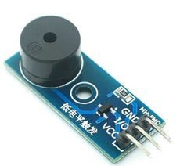

Keepon pro: diagrama del sistema
Alimentación, datos y señales del robot con la disposición del modelo mecánico v4 (docs/keepon_v4_cad/: la Pi va dentro de la cabeza y la ESP32 en la caja base). Desde el 14/10, una fuente de laboratorio alimenta los tres servos a 6 V y el powerbank Xiaomi alimenta la Pi 5; la LiPo y los reguladores salieron. Los bloques en línea continua ya los tienen; los de trazo naranja faltan comprar o armar.
Conexionado con fotos
Los tres servos numerados en el orden del protocolo (yaw pitch roll): 1 = yaw (RDS3218, GPIO0), 2 = pitch (HS-7955TG, GPIO1) y 3 = roll (MG996R, GPIO4). La foto de la ESP32 es de la cara de abajo, donde están impresos los nombres de los pines; los círculos marcan los que se usan. Las fotos de los servos son las de los que se montan (docs/Fotos/servo_*); las de la Pi, la cámara (es de la Wide, solo ilustrativa) y el powerbank son de catálogo.
Diagrama de bloques
Módulo del buzzer

Módulo de buzzer pasivo MH-FMD. Ya trae el transistor (un PNP) y la resistencia de base, así que el circuito con el 2N2222, las dos resistencias y el diodo ya no hace falta.
| Pin del módulo | ESP32-C3 |
|---|---|
| VCC | 3V3 (no 5V) |
| I/O | GPIO10 |
| GND | GND |
- VCC a 3V3, no a 5V. El transistor es PNP: se apaga solo cuando el I/O llega a la tensión de VCC. Con VCC a 5 V, el ALTO de 3,3 V del GPIO no alcanza para apagarlo y el buzzer queda con corriente todo el tiempo. A 3,3 V suena algo más bajo.
- Se activa por nivel bajo (低电平触发, lo que está impreso en la placa). Por eso el firmware invierte la salida del GPIO10 (ledcOutputInvert): callado = pin en ALTO, sin corriente en la bobina. Las notas son una onda cuadrada al 50 % y suenan igual.
- Durante el arranque, hasta que corre el setup(), el GPIO10 queda sin configurar y el buzzer puede hacer un clic: es normal.
- Probarlo antes de montarlo: con el I/O a GND fijo tiene que hacer solo "clic". Si pita solo, es activo y no sirve.
Lo que falta
| Componente | Estado | Para qué / qué comprar |
|---|---|---|
| Fuente de laboratorio 6 V, ≥ 5 A | TENÉS | La de las pruebas de banco. Ajustarla a 6,0 V y poner el límite de corriente en 4–5 A (≥ 6 A si se puede) antes de conectar los servos. Con 3 A o menos, en los giros rápidos entra en limitación y los servos tiemblan. La ALP002 no sirve (1,5 A, entrada de 110 V). |
| Bornes de panel banana 4 mm (rojo y negro) + 2 cables 18 AWG | FALTA | Entrada de la fuente en la pared de atrás de la caja (agujeros de Ø8, 19 mm entre centros: medir los que compren). Cables banana–banana o banana–cocodrilo de ~1 m, de 18 AWG o más gruesos. |
| Interruptor de los servos, ≥ 10 A | FALTA | De balancín (corte 19,2 × 12,8), sobre el +6 V. Es la parada de emergencia física en la demo y la única forma de aflojar el HS-7955TG, que sin pulso sigue haciendo fuerza. |
| Bornera de distribución de 6 V | FALTA | Un único punto donde se juntan +6 V y GND de los tres servos, el capacitor y el GND de la ESP32 (estrella). Va en la bahía de adelante de la caja. |
| Capacitor 2200 µF / 16 V + 100 nF | FALTA | En la bornera de 6 V. Con la fuente lejos, el cable largo tiene inductancia y el capacitor da los picos de los servos. |
| Cable USB-A macho → 2 hilos + bornera de 2 polos | FALTA | Saca 5 V y GND de la salida USB-A del powerbank hacia los pines de la Pi. El USB-A entrega 5 V sin negociar: no hace falta placa USB-C con resistencias. Hilos de ≥ 22 AWG (muchos cables USB traen 28 AWG y caen tensión a 3 A). Si en la cabeza el USB-C de la Pi queda libre (sin verificar: PI_CSI_SALIDA), usar en su lugar un cable USB-C acodado directo, como en el banco. |
| Módulo de buzzer pasivo (MH-FMD) | TENÉS | El buzzer que pide el enunciado, en el GPIO10, con VCC a 3V3: ver "Módulo del buzzer" arriba. Trae el transistor: no hacen falta el 2N2222, las resistencias ni el diodo. |
| Active Cooler de la Pi 5 | RECOM. | La percepción usa ~240 % de CPU de forma sostenida; sin ventilador la Pi baja la frecuencia y cae la tasa de percepción. Va dentro de la cabeza cerrada: medir su altura (COOLER_H, se supusieron 11 mm) y la temperatura con la cabeza armada (/sys/class/thermal/thermal_zone0/temp). |
| Cinta CSI ~150 mm (22→15) | TENÉS | Alcanza justo porque la Pi está en la cabeza: el recorrido con la U usa 147 de 150 mm. Antes de imprimir: medirla de punta a punta (FFC_LARGO) y mirar hacia qué extremo de la Pi sale del conector (PI_CSI_SALIDA). Nunca torcerla ni marcarle pliegues. |
| Cable USB-A acodado a micro-USB | RECOM. | Los USB-A de la Pi quedan arriba en la cabeza. El cable baja por roll, pitch y yaw hasta la ESP32, en la base: tiene que ser flexible y con bucle de servicio. |
Conexionado
| Desde | Hasta | Nota |
|---|---|---|
| Fuente de laboratorio + | Borne rojo → interruptor → +6 V de la bornera | 6,0 V, 18 AWG |
| Fuente de laboratorio − | Borne negro → GND de la bornera | estrella |
| Bornera +6 V | V+ (rojo) de los 3 servos | 6,0 V |
| Bornera GND | GND (marrón/negro) de los 3 servos | estrella |
| Powerbank (USB-A) | Bornera de 5 V → Pi 5, GPIO pines 2/4 (5 V) y 6 (GND) | 5 V, 20 AWG, cruza yaw, pitch y roll |
| Pi USB-A (arriba) | ESP32-C3 micro-USB | cable acodado, baja a la base · /dev/serial/by-id/usb-1a86_… |
| Pi CSI (CAM/DISP 0) | Camera Module 3 NoIR | cinta 22→15 de ~150 mm, U fija dentro de la cabeza |
| ESP32 GPIO0 | señal yaw (RDS3218) | 3,3 V, 50 Hz |
| ESP32 GPIO1 | señal pitch (HS-7955TG) | 3,3 V, 50 Hz |
| ESP32 GPIO4 | señal roll (MG996R) | 3,3 V, 50 Hz |
| ESP32 GPIO10 | I/O del módulo del buzzer | activo en bajo |
| ESP32 3V3 y GND | VCC y GND del módulo del buzzer | 3V3, no 5V |
| ESP32 GND | GND de la bornera de 6 V | obligatorio |
Consumo y autonomía (estimados)
| Carga | Fuente | Típico | Pico |
|---|---|---|---|
| Pi 5 + cámara (percepción) | powerbank | 7 W | 12 W (2,4 A) |
| ESP32-C3 + buzzer | USB de la Pi | 0,5 W | 1 W |
| 3 servos siguiendo a alguien | lab., 6 V | 6–12 W (1–2 A) | ~36 W (6 A) |
| 3 servos con el eje trabado | lab., 6 V | — | hasta ~12 A |
El powerbank tiene 74 Wh (~65 Wh útiles a 5 V): con la Pi a ~7,5 W dura unas 8 a 9 horas. La fuente de laboratorio no tiene límite de tiempo; lo que importa es su límite de corriente. Un servo trabado no llega a los 12 A porque la fuente limita antes: es la protección, y por eso no hace falta fusible.
Cuidados
- Ajustar la fuente a 6,0 V y el límite de corriente con la salida apagada, antes de conectar los servos. Más de 7,4 V quema el MG996R y el RDS3218.
- Revisar la polaridad de los bornes (rojo = +6 V) y de los 5 V del GPIO antes de la primera conexión: ninguno de los dos caminos tiene protección.
- Encender: primero el powerbank (arranca la Pi y la ESP32), después los 6 V con la cabeza cerca de home: el HS-7955TG salta a velocidad máxima con el primer pulso. Apagar: primero los 6 V, después la Pi.
- Cortar los 6 V antes de conectar o cambiar servos (en el banco, enchufar uno en caliente desconectó la ESP32 del USB).
- Medir los 5 V en los pines del GPIO de la Pi con la percepción corriendo (≥ 4,9 V). Nunca alimentarla a la vez por el GPIO y por el USB-C.
- Las señales de 3,3 V de la ESP32 ya movieron los tres servos en el banco: no hace falta adaptador de nivel.
- La segunda NoIR (i2c@88000) no transmite: desconectarla del robot final.